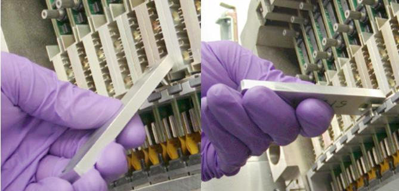

| NOTE: | Early detectors did not have light seal clips so this step can be skipped if the clips are not installed. |
Insert the MultiTool pin into the Light Seal clip hole, tilt the tool up to pull clip out then pull straight out to finish removing clip.
Tool has a magnet to keep clip from falling into gantry during removal.
Illustration 7: Light Seal clip removal
